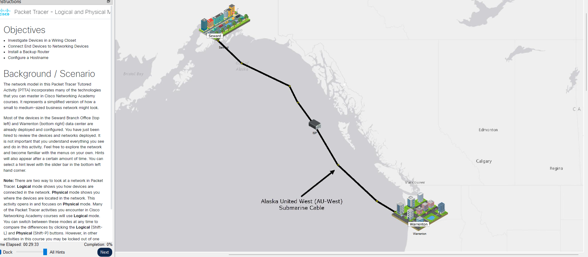
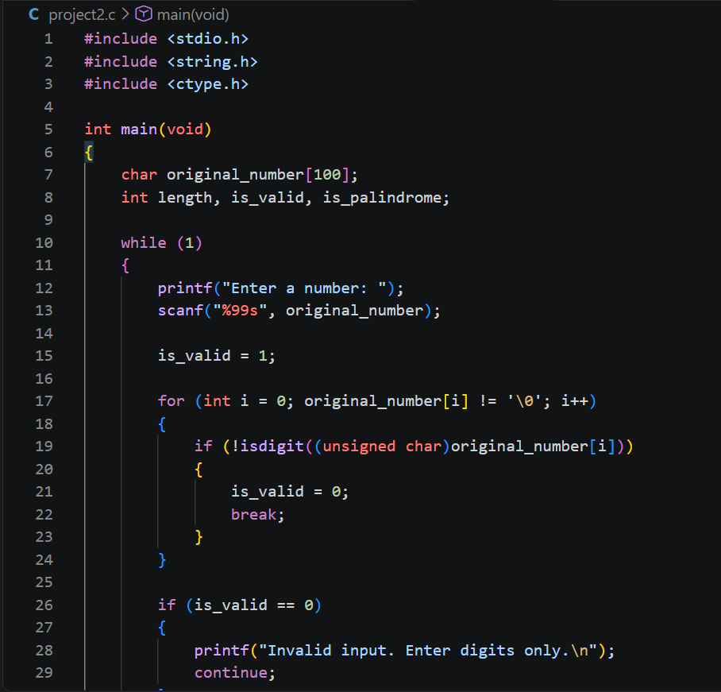
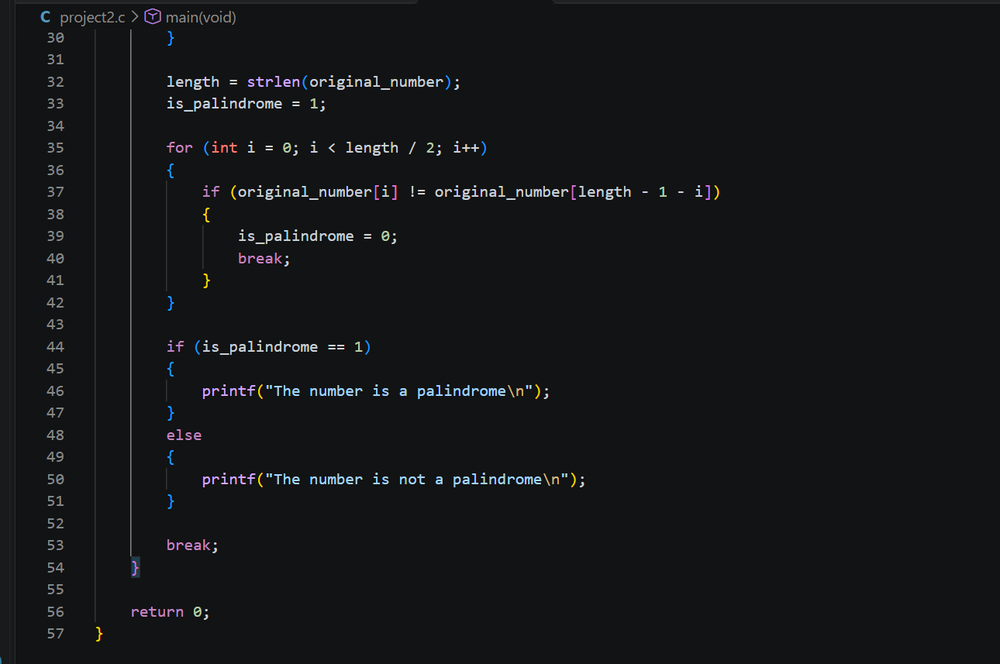

Student Portfolio Website
A personal student portfolio website designed to showcase my educational background, technical skills, projects and career aspirations.
Technologies Used
- HTML
- CSS
- JavaScript
MY WORK AND EXPERIENCE
Here are some of the projects and practical learning activities I have completed while developing my skills in web development, programming and computer networking.
A personal student portfolio website designed to showcase my educational background, technical skills, projects and career aspirations.

A practical programming exercise involving the development of a palindrome checker using C.

A practical networking exercise using Cisco Packet Tracer to explore network environments, understand network devices and examine the differences between Logical and Physical workspaces.
PROGRAMMING PRACTICE
The Palindrome Checker is a C programming exercise designed to determine whether a number reads the same forwards and backwards. The exercise helped me practise logical thinking, arithmetic operations and the use of control structures in C.

This part of the program introduces the variables and accepts the number that the user wants to check.

This part demonstrates the logic used to process the number and determine whether it is a palindrome.
The program receives a number from the user and processes its digits to obtain the reverse of the original number. It then compares the reversed number with the original number.
If both numbers are equal, the program identifies the number as a palindrome. Otherwise, it identifies it as a non-palindrome.
Through this exercise, I gained practical experience in breaking a problem into logical steps and translating those steps into a working C program.
NETWORKING PRACTICE
This practical learning activity involved using Cisco Packet Tracer to explore computer networks and understand how network environments are represented. I worked with both Logical and Physical workspaces and explored how network devices, locations and connections are organised.
This image illustrates the Cisco Packet Tracer environment used to explore network layouts, physical locations and connections.
I explored the Logical workspace, which provides a visual representation of how network devices are connected, and the Physical workspace, which represents network infrastructure in physical locations.
I also learned about network cabling and how different devices can be connected within a network environment.
This activity improved my understanding of how computer networks are structured and represented. It also helped me connect networking concepts learned in theory with their practical representation in Cisco Packet Tracer.